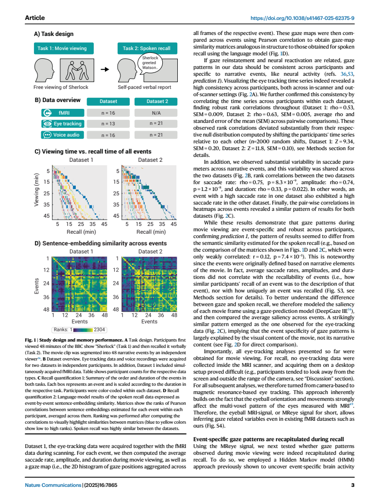
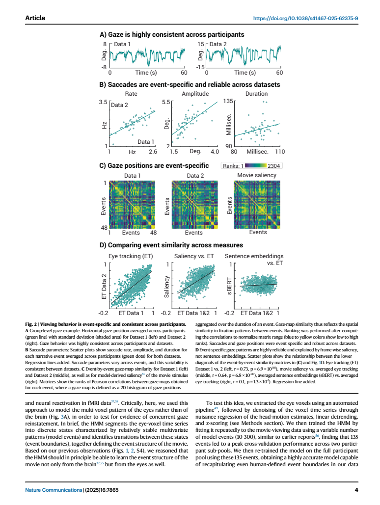
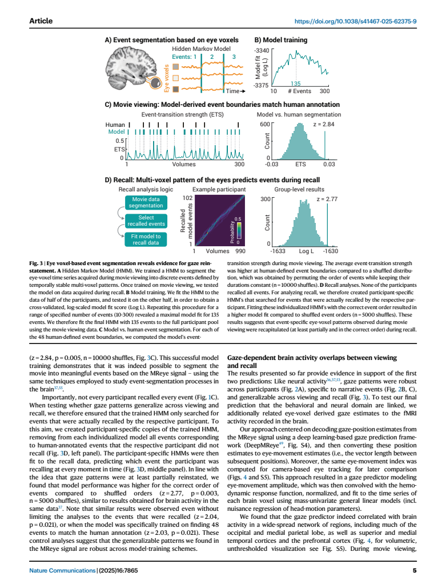
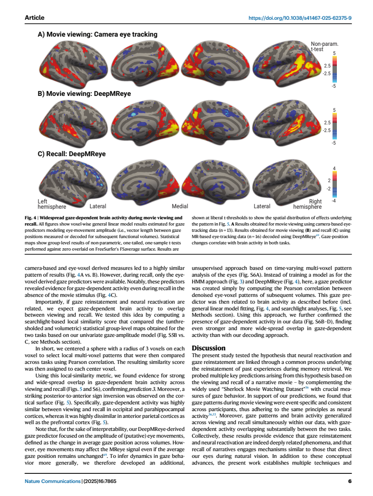
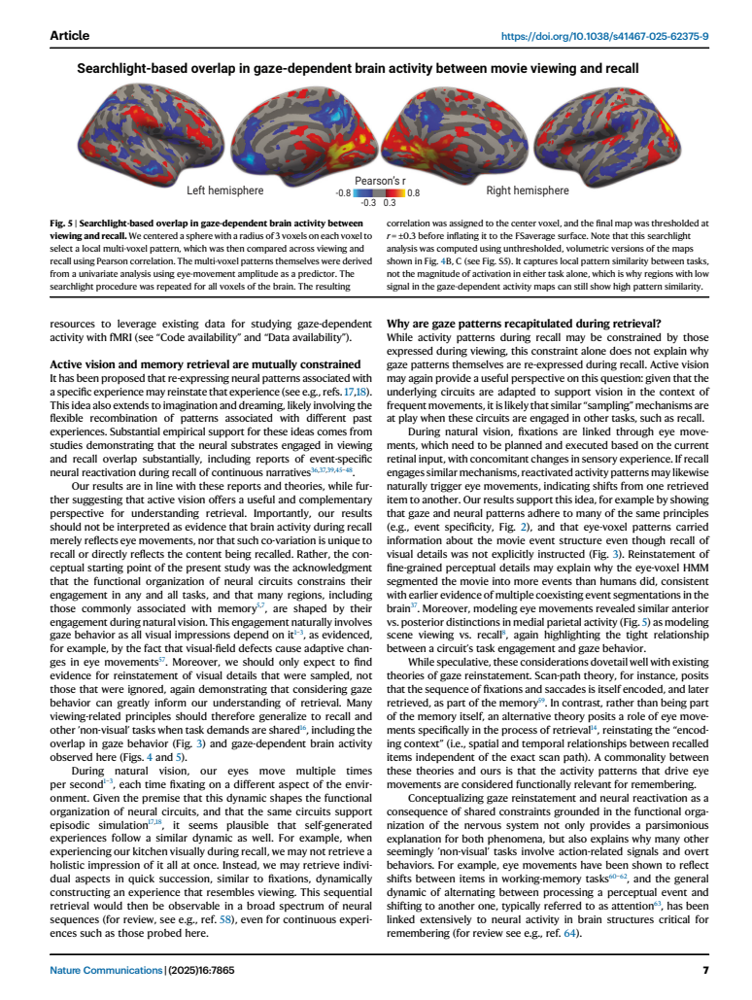

回忆叙事事件时，眼睛与脑活动共同重现观看的组织方式
作者Matthias Nau, Austin Greene, Hannah Tarder-Stoll, Juan Antonio Lossio-Ventura, Francisco Pereira, Janice Chen, Christopher Baldassano & Chris I. Baker
出处Nature Communications 16, 7865 · 2025 · 正式发表版本
代码HMMeye · DeepMReye · OSF 分析与数据
核心洞见记忆提取可能沿用主动视觉中顺序取样的组织方式，因此眼动重现与神经再激活值得作为相互关联的现象共同研究。
阅读依据用户指定正式版 PDF，15 页；逐页核对主文与五张主图，并查读官方代码快照。所有页码均为 PDF 页码，与文章印刷页码一致。
打开左上角 ✎ 后选中文字，可以划线、写笔记，或标记不懂 / 啰嗦 / 已懂。⤓ 将标注写入 HTML 或下载带标注的副本。各节标题左侧可以折叠。建议先读前两节，再顺着 Fig. 1 → Fig. 2 → Fig. 3 → Fig. 4–5 深入。
同一个事件的两种重现
屏幕上已经没有《Sherlock》的画面，参与者正在用语言回忆剧情。此时，眼球的 MRI 信号仍包含与先前观看相关的事件模式；与此同时，眼动变化与脑活动之间的关系，也在观看和回忆两项任务间表现出空间上的相似性。这是本文最值得带走的现象。
先把摘要压成一条完整的推理。作者提出，gaze reinstatement（眼动重现）与 neural reactivation（神经再激活）可能受共同的提取过程约束。他们结合电影观看、自由口述回忆、fMRI、眼动测量与语言模型，检验三类预测：眼动是否有跨个体稳定的事件结构；这种结构能否从观看迁移到回忆；眼动相关的脑活动在两项任务中是否具有共同的空间组织。结果整体与这些预测一致，支持从 active vision（主动视觉）理解记忆提取。【文中有据：p. 1–2、5–8】
这条解释的起点很具体。观看一个场景时，我们通过一串注视取得信息，而不是一次得到所有细节。记忆检索如果再次调用这些神经回路，就可能保留顺序取样的特征。作者把眼动放进记忆机制的讨论，是因为视觉经验本来就由眼动参与组织。【文中有据：p. 1、7–8】
这里有三个需要始终分开的层次。第一，观看时不同事件有不同的眼动分布。第二，观看时的眼球体素模式能帮助解释回忆时的眼球体素序列。第三，脑活动对眼动预测量的响应，在观看和回忆中有局部模式相似性。第三层把行为与脑联系起来，但三层合在一起也没有决定眼动导致神经再激活或相反方向的因果箭头。
| 作者的预测 | 承担证据的分析 | 读时要保留的尺度 |
|---|---|---|
| 眼动具备事件特异性与跨个体稳定性 | Fig. 2：观看期相机眼动 | 共同刺激下的观看行为 |
| 事件模式跨观看与回忆泛化 | Fig. 3：眼球体素 HMM | 事件级、多变量、顺序约束下的泛化 |
| 眼动相关脑活动跨任务有共同组织 | Fig. 4–5：GLM 与 searchlight | 眼动预测量的脑响应图，而非直接的事件内容解码 |
48 分钟观看与自由口述回忆
参与者观看 BBC《Sherlock》第一集 A Study in Pink 的前 48 分钟，分成约 23 与 25 分钟两个 run。之后，他们按剧情顺序尽可能详细地口述所看内容，要求至少持续 10 分钟。MRI 内回忆时屏幕为黑底中央白点；桌面组为深灰底，没有中央点。参与者没有被要求维持注视，也确实没有持续注视中央。【文中有据：p. 2–3、8–9】
这不是一套逐题问答或逐帧识别任务。回忆的基本记录是一段语音：说了哪些事件、何时开始说、说了多久、用了哪些语义。独立编码者此前根据地点、时间和主题将电影分成 48 个 narrative events，作者把每位参与者的转录也分配到这些事件及其时间区间。一个事件在电影中可能持续两分钟，在回忆中只讲二十秒；另一个事件可能被跳过。这正是后来不能把观看与回忆逐秒对齐的原因。
| 数据 | Dataset 1：MRI 内 | Dataset 2：桌面 |
|---|---|---|
| 进入正文分析的人数 | 16 | 21 |
| fMRI 与口述回忆 | 16 人均有 | 21 人有口述；无 fMRI |
| 可用相机眼动 | 13 人，仅观看期 | 21 人观看期 |
| 回忆期相机眼动 | 没有采集 | 采集过，但大量超出追踪范围，未纳入后续分析 |
| 回忆期眼动的主要依据 | 眼球 MRI 体素及其衍生预测量 | 不承担本文主要的回忆期重现检验 |
Dataset 1 来自原有 Sherlock 数据集，本文补入此前未发布的相机眼动，并从 MRI 中提取眼球信号；Dataset 2 是独立参与者的新桌面实验。因此，桌面组的重要作用，是验证观看眼动及口述语义结构能跨样本重现。它并不构成第二份 fMRI 回忆期重现证据。【文中有据：Fig. 1B，p. 9】
下面把同一段虚构的三事件故事压缩。拖动回忆的相对时长，观看与回忆仍保留 A → B → C，但边界不再在同一秒出现。
教学示意：横轴是各任务自身经过的时间，纵轴是事件编号。回忆速度可以变化，事件顺序保持不变；本文使用 HMM 处理的正是这种跨时间尺度匹配。
查看 Fig. 1 原页 · PDF p. 3

Fig. 1C 的每种颜色代表一位参与者，矩形的宽高关系对应观看与回忆中的事件时长。读这张图时，应先看事件是否按序出现、哪些事件缺失，再看压缩程度。Fig. 1D 的两张矩阵比较的是事件间的语义关系，颜色为相关值的 rank；颜色相近不能直接当作原始 Pearson r 数值相同。
如果直接比较观看第 300 秒与回忆第 300 秒，可能把完全不同的事件配成一对。低成本检查是先把转录中的事件区间画出来，确认顺序、遗漏和时长。根据回忆内容筛选事件可以减少这种错配，但也意味着模型获得了哪些事件被回忆的先验信息；解释模型能力时要把这项信息写出来。
语言模型把口述变成事件关系
SBERT 在这里负责提供语义表示。作者使用 all-mpnet-base-v2，将参与者对每个事件的口述文本编码为 sentence embedding，再用 Pearson correlation 比较事件向量。设 $e_{s,i}\in\mathbb{R}^{d}$ 为参与者 $s$ 对事件 $i$ 的嵌入，$d$ 为模型输出维度；则 $S^{(s)}_{ij}=\operatorname{corr}(e_{s,i},e_{s,j})$，得到事件 × 事件的矩阵。这里的 Pearson r 是在向量的特征维上计算，不是在时间点上计算。【文中有据：p. 2、9–10】
同一个人可能把Sherlock 向 Watson 解释线索和Sherlock 展示推理说得很相近，而把它们与另一场景说得很不同。如果两组人的事件矩阵具有相似结构，就说明其口述保留了可比较的事件语义组织。这让跨参与者分析更有根据。它不能逐条保证所有回忆细节都准确，也不能保证遗漏的信息不存在。
作者还把参与者口述与独立的事件描述比较。Recallability 是某事件的口述嵌入与对应事件描述嵌入的相关。Distinctiveness 则问：这个匹配是否比它与其他事件描述的匹配更突出。记 $r_i$ 为正确匹配的相关，$\mu_{-i}$ 和 $\sigma_{-i}$ 为该口述与其他事件描述相关值的均值与标准差，那么其标准化特异程度为：
$$D_i=\frac{r_i-\mu_{-i}}{\sigma_{-i}}.$$
例如，一个口述与正确描述的相关为 0.70。如果它与其他描述平均也有 0.65 的相关、标准差 0.10，$D_i=0.5$；如果其他相关的均值为 0.20、标准差仍为 0.10，$D_i=5$。两者 recallability 相同，但第二个口述更能区分对应事件。数值为教学构造。这个区分很适合迁移到记忆指标设计：匹配程度与匹配特异性应分别报告。
本文没有发现观看时平均 saccade rate、amplitude、duration 与这两种回忆指标存在很强关系。因而，不能从本文推出看得越多或眼跳越大，记得越好。【文中有据：p. 3、10；Fig. S3 的结果由主文描述，补充图未独立核对】
语义相似可能被重复的人名和通用剧情词抬高。先检查正确事件与错误事件的匹配分布，比只看一个高相关更有信息。另一个应检查的环节是文本截断：p. 9 将上限写为 768 tokens，但实际处理应读取所用 SentenceTransformer 版本的 max_seq_length 并核对输入 token 数；不能把嵌入维度或文中的单个数字直接当作软件的有效长度限制。本轮没有重算原始文本。
注视分布保留位置，丢掉顺序
观看时的相机眼动包含 gaze position 和 saccade 参数。作者先清理眨眼和异常值、去趋势、居中，并用 100 ms 的 running average 平滑。眼跳检测使用相对速度阈值，排除短于 12 ms 的眼跳，再按事件统计平均 rate、amplitude、duration。【文中有据：p. 9】
另一种表示是 gaze map：把一个事件内所有注视位置累积成 101 × 53 的二维直方图，归一化后平滑。将一张图展成 $g_i\in\mathbb{R}^{5353}$，就可以计算 $G_{ij}=\operatorname{corr}(g_i,g_j)$。这个量问的是两段事件是否让人把目光分配到相似的位置，而不是是否以相同顺序访问这些位置。
例如，A → B → C 与 C → B → A，如果在三处停留时间相同，gaze map 可以完全一致。下面点选两种路径，位置的访问顺序发生变化，但右侧按位置统计的占用比例保持不变。
教学示意：左图蓝色为各时间步的注视位置；右图橙色为各位置的占用比例。两张图使用各自的坐标与量纲。这说明 gaze-map similarity 不能单独证明 scan-path replay。
图中的简化路径只保留一个空间维度，论文使用二维位置和更密的时间采样。这个简化不改变关键区别：空间分布把时间顺序积分掉了。后面 HMM 保留的是眼球体素模式随时间的事件序列，因此它比 gaze map 更接近顺序问题，但仍达不到逐次眼跳轨迹重放的测量粒度。
Fig. 2 的稳定性主要来自视觉内容
观看同一部经过剪辑的电影时，不同参与者会受到相同构图、运动和切镜的引导。本文观察到，相机眼动时间序列在组内有较高相关，两个数据集的平均 pairwise Spearman rho 分别约为 0.53 与 0.63。事件级的眼跳率、振幅和时长也跨数据集相关，rho 分别为 0.75、0.74、0.33。【文中有据：p. 3，Fig. 2A–B】
真正决定解释方向的是 Fig. 2D。两组事件 gaze-map 相似矩阵的相关约为 r = 0.73；电影画面经 DeepGaze IIE 得到的 saliency 相似矩阵，与平均眼动矩阵相关约为 r = 0.64；口述的 SBERT 语义矩阵与平均眼动矩阵相关则约为 r = 0.10。DeepGaze IIE 从电影画面预测哪里容易被看，和后面的 DeepMReye 从眼球 MRI 预测 gaze 是两种不同模型。【文中有据：Fig. 2D，p. 4、10】
因此，这里的事件特异性首先意味着不同电影片段具有不同的观看分布。它不自动等于眼动编码了事件的叙事语义。事件按叙事划分，但每个事件也有自己的画面统计。作者用 saliency 模型把这两个层次拆开，是这条证据链中很重要的一步。主文 p. 3 另给出一个弱语义相关 r = 0.12；Fig. 2D 图注给出平均矩阵比较的 r = 0.10。本读本按具体比较标注数值，不把两者混用。
查看 Fig. 2 原页 · PDF p. 4

读 Fig. 2C 时看两组眼动矩阵和 saliency 矩阵是否有共同的块状结构；读 2D 时比较散点的聚集方向。右侧语义散点虽然也有统计上的相关，幅度明显小得多。对研究问题来说，相关的大小比极小的 p 值更能说明这里主要捕捉哪种信息。
48 个事件产生 1128 个非重复的事件对，但事件对共享事件，不等于 1128 个独立参与者。若自己复现矩阵相关的显著性，应保留这种依赖关系，例如通过置换事件标签或参与者层面的重采样构造零分布。这里是对推断单位的分析建议，不是本文重新运行后的统计结论。
眼球体素把观看与回忆连起来
相机在回忆期缺乏可用数据，作者转而使用 MReye signal：功能 MRI 图像中眼球区域的体素信号。眼球方向、运动和相关组织变化会改变这一多变量模式，因而从眼球区域可以推断 gaze 相关信息。这一信号与大脑中的 BOLD 神经活动在概念上应分开，尽管两者来自同一次 MRI 采集。【文中有据：p. 3、11–12】
把眼球体素排成 $X^{eye}\in\mathbb{R}^{T\times V}$，$T$ 是功能体积数，$V$ 是保留的眼球体素数。行 $x_t\in\mathbb{R}^{V}$ 是某个体积对应的眼球模式。HMM 直接分析 $X^{eye}$，不需要先把它解码成二维 gaze position。另一条 DeepMReye 分支则把眼球图像输入已训练的 3D CNN，产生位置估计，再从位置估计计算变化幅度。本文还有不依赖训练的相邻眼球模式相关分支。三条路线各自回答不同问题。
| 路线 | 输入与输出 | 承担的结论 |
|---|---|---|
| HMM | 眼球体素序列 → 事件模式及状态概率 | 观看事件结构是否泛化到回忆 |
| DeepMReye | 眼球 MRI → 位置 → 相邻体积位移 | 可解释的 gaze 预测量与脑活动的关系 |
| 相邻体素模式相关 | 相邻眼球多变量模式 → 相似度序列 | 不经位置解码的眼球动态与脑活动的关系 |
作者先做 nuisance regression、线性去趋势和标准化，HMM 分支还排除跨参与者相关不高于 0.1 的体素。这些步骤减少头动及非稳定噪声的影响，也让模型优先利用跨个体共享的变化。因此，最后得到的事件表示更适合描述这部共同电影的共享结构，而不能直接当作所有个体特有记忆细节的完整表示。【文中有据：p. 11；官方 preprocess_eyevoxels.ipynb 与 run_HMMeye.ipynb】
如果扫描视野没有覆盖眼球，或眼球区域在预处理中被裁掉，这条路线就无法成立。复现的第一项检查是眼球 mask 与功能图像的覆盖和配准，再看体素时间序列及头动关系。直接把任意脑外 MRI 信号交给分类器，不能替代这项测量核对。官方 HMMeye README 明确要求检查眼球与视神经是否在功能图像内。
HMM 允许事件改变时长
HMM 的用途，是在连续、速度可变的时间序列里寻找一串相对稳定的模式。设 $z_t\in\{1,\ldots,K\}$ 为时间 $t$ 的隐藏事件状态，$\mu_k\in\mathbb{R}^{V}$ 为第 $k$ 个事件的眼球模式。这个事件分段模型保持状态顺序，每一步可以留在当前事件或向下一个事件推进。重复留在同一状态的次数决定该事件持续多久。因而它能把很长的观看事件匹配到较短的回忆事件，而无需预先指定每个回忆事件的精确边界。
下面的式子是帮助理解 HMM 的一般生成表达，不是声称 BrainIAK 就按这一行未经处理的数据运行。实际库还处理标准化、模式方差及数值计算。它表达的重点是，观测模式相似度与顺序约束共同决定序列的似然：
$$p(X^{eye})=\sum_{z_{1:T}}p(z_1)\prod_{t=2}^{T}p(z_t\mid z_{t-1})\prod_{t=1}^{T}p(x_t\mid\mu_{z_t}).$$
这里 $z_{1:T}$ 表示一条完整事件路径；第一项约束起点，中间一项约束事件转移，最后一项衡量该时间点的眼球模式与相应事件模板是否匹配。对所有允许路径求和，才能评价整段数据是否符合这套事件序列。Log-likelihood 高意味着这套模式与顺序更能解释数据，它不是逐个事件识别正确率，更不是把一个负数变成记忆得分。
本文先在观看数据中，从一半参与者学习模式，在另一半参与者中比较不同事件数 $K$ 的 log-likelihood。测试范围约为 10–300，峰值在 K = 135，随后用所有参与者的观看数据重新训练最终 HMM。135 是这一模型、特征选择和电影下的最优状态粒度；48 是人工叙事事件数。二者定义不同，不能把 135 当作参与者主观报告了 135 个剧情事件。【文中有据：Fig. 3B，p. 4–5、11】
一个人工叙事事件可以包含多次镜头切换与视觉取样模式变化，所以比叙事标签更细的分段是合理的解释方向。作者在讨论中也提出细粒度视觉细节可能造成更密的分段。但本研究没有逐个证明全部额外 HMM 边界都对应特定心理事件。【文中有据及解释范围：p. 7】
下面的三状态模型使用一维高斯观测，穷举所有合法的两个边界，对路径似然求和；它完整展示固定模板、可变持续时间、保持顺序这三项操作。点击顺序切换，或改变观测扰动，看看状态概率与整段 log-likelihood 如何变化。
教学示意：上部为观测值，下部三行格子分别为状态 1–3 的后验概率，颜色越深表示概率越高。状态模板、噪声与数值均为构造；未运行论文原始 HMM 或原始数据。
若只展示按顺序排列的状态概率图，HMM 的顺序先验本身就可能让图上出现向前推进的色带。先检查真实模板顺序是否比随机模板顺序更能解释同一段数据。要进一步测试时间漂移等替代解释，可加入保持自相关结构的对照；这属于扩展检验，不能把本文的顺序置换解释成已经排除所有非记忆因素。
边界强度与人工叙事边界相遇
在把模型用于回忆之前，作者先问它从眼球体素中分出的事件是否与人的叙事分段有关系。这里有一个很容易含混的公式。若每个时间点对状态的后验为 $\gamma_{t,k}=p(z_t=k\mid X)$，直接把所有状态概率相加，结果总是 1，对其求导没有边界信息。官方 notebook 实际上先算期望事件编号，再取时间差分：
$$m_t=\sum_{k=0}^{K-1}k\,\gamma_{t,k},\qquad ETS_t=m_{t+1}-m_t.$$
这里用 $k=0,\ldots,K-1$ 与代码一致。若概率从 $(0.9,0.1,0)$ 变为 $(0.1,0.8,0.1)$，期望编号就从 0.1 变为 1.0，ETS 为 0.9。若前后都为 $(0.1,0.8,0.1)$，ETS 为 0。前者有向下一状态推进的证据，后者基本停留在同一事件。公式来自公开 notebook 中 np.diff(movie_HMM.segments_[0] @ np.arange(best_n_events)) 的具体实现。
作者在人工边界位置取 ETS，再对这些位置平均。对照是打乱人工事件的排列，但保留各事件持续时间，由重排后的持续时间产生新的边界位置。实际平均 ETS 高于这种零分布，报告 z = 2.84，p = 0.005，10,000 次置换。【文中有据：Fig. 3C，p. 5、11】
这个检验把存在很多状态变化推进到状态变化更容易出现在有意义的叙事转换附近。但它不要求每个人工边界都被模型精确命中，也没有要求两个分段具有完全相同的状态数。两套尺度可以在部分边界上相遇，同时保留不同粒度。
Fig. 3 的泛化检验依赖正确顺序
进入回忆期后，作者保留观看训练得到的模式模板，让模型解释新的眼球体素序列。由于每人回忆的事件不同，作者根据口述人工标签，为每人复制一份模型，移除与未回忆叙事事件对应的模型状态。随后在其回忆数据中估计状态概率，并计算 log-likelihood。【文中有据：p. 5、11；官方 notebook】
关键比较使用同一段回忆数据：真实电影顺序下的模型，与打乱模板顺序的模型相比，哪一个解释得更好。真实顺序的组水平拟合更高，报告 z = 2.77，p = 0.003，5,000 次置换。这支持观看期间的事件相关眼球模式，在回忆期间至少部分重现，而且其组织符合原有事件顺序。
两个控制让结论更稳固：不按参与者回忆内容删减模型状态，仍有 z = 2.04，p = 0.021；将模型固定成与人工叙事标签相同的 48 个状态，也有 z = 2.03，p = 0.021。所以，观察结果并非只依赖 135 状态或针对回忆事件删减这一种设定。【文中有据：p. 5】
查看 Fig. 3 原页 · PDF p. 5

Fig. 3D 中间一图的横轴是回忆中的功能体积，纵轴是保留下来的模型事件，颜色为模型概率。右图将真实顺序的组平均 log-likelihood 放到置换分布中。主要统计证据是右侧的比较，不是中间色带看起来沿对角线移动。 同时，本文的主检验没有以逐事件起止时间预测误差或独立分类准确率，来证明模型可在任意自由回忆中盲解码全部事件内容。
根据口述选择状态，是有根据的条件化分析，但若要开发不依赖报告的记忆读出，就不能把这份人工事件清单悄悄作为输入。可以保留本文用于机制检验的版本，再另做完全隐藏回忆标签的测试。两种版本的目标不同，应分别给出数据输入和评估指标。
DeepMReye 提供位置变化的预测量
HMM 已经给出眼球模式重现的证据，但要把眼动与脑活动联系起来，还需要一个随时间变化、容易解释的量。作者用预训练 DeepMReye 解码 gaze position，并用 Dataset 1 的观看数据微调。微调使用 1 epoch、5,000 steps，batch size 8，learning rate $2\times10^{-6}$，还包含三维旋转、平移与缩放增强。【文中有据：p. 11–12】
这里最影响解释的设计，是微调目标用了群体中位 gaze path。由于电影观看时跨参与者眼动相当一致，这样可以减少个别参与者相机数据缺失的影响，也能将全部 16 人的眼球 MRI 用于微调。模型表现也相对于相机的群体中位路径评估。它因而提供共同刺激下的 gaze 估计；这项评估并不等价于逐人、逐时刻相机真值的独立验证。【文中有据：p. 12】
最重要的任务迁移发生在之后：模型在观看时有相机参照，在回忆时没有。回忆的眼球图像、眼球位置范围与头部状态可能不同。主文支持用 MRI 推断回忆期 gaze 相关变化，但本文没有高质量的回忆相机数据，无法在这一阶段逐点核验位置误差。这决定了结论应落在事件模式和 gaze 相关动态上，而不是精确坐标级重放。
设 $\bar g_t=(\bar x_t,\bar y_t)\in\mathbb{R}^{2}$ 为第 $t$ 个功能体积的平均 gaze position，则本文的位移预测量是：
$$a_t=\lVert\bar g_t-\bar g_{t-1}\rVert_2=\sqrt{(\bar x_t-\bar x_{t-1})^2+(\bar y_t-\bar y_{t-1})^2}.$$
若平均位置从 $(0,0)$ 变成 $(3,4)$，位移是 5 个对应坐标单位。但如果在一个 TR 内先向左看再向右看、最后返回中间，平均位置可能几乎不变。相邻体积平均位置差不等于该体积内所有眼跳振幅之和。 本文 TR 为 1.5 s，这与高频眼动仪逐次检测 saccade 的时间尺度明显不同。【文中有据：p. 6、10–12】
如果 MRI 解码误差让位置抖动，取相邻差分会把它变成正的位移幅度。因此，诊断应同时查看位置稳定性、与相机信号的一致性和头动关系。作者加入的无监督眼球模式相关分析提供另一条不依赖位置解码器的证据路线，但也需要保留眼球动态与其他 MRI 噪声的区分。
Fig. 4 把眼动变化与脑活动连接
眼球位置改变几乎即时发生，脑内 BOLD 对神经事件的响应则有延迟和展宽。作者因此先将 gaze 预测量归一化，与 hemodynamic response function, HRF 卷积，再居中，逐脑体素拟合 general linear model。其简化表达为：
$$q_t=\operatorname{center}\{\operatorname{norm}[(h*\operatorname{norm}(a))_t]\},\qquad y_{v,t}=\beta_{g,v}q_t+\sum_j\beta_{j,v}c_{j,t}+b_{v,run}+\epsilon_{v,t}.$$
$a\in\mathbb{R}^{T}$ 是 gaze 位移序列，$h$ 是 HRF 核，$q\in\mathbb{R}^{T}$ 是卷积后的主预测量；$y_{v,t}$ 是脑体素 $v$ 在时间 $t$ 的信号；$c_j$ 包含头动等 nuisance regressors；$b_{v,run}$ 表示各 run 的基线。关注的 $\beta_{g,v}$ 描述控制这些回归量后，脑信号与 gaze 预测量的统计关系。【文中有据：p. 12】
下面拖动眼动变化发生的时刻。蓝色脉冲移动时，橙色 HRF 卷积曲线整体随后移动，峰值出现在更晚的时间。这个时滞解释了为什么不能把同一采样点的 eye movement 与 BOLD 直接按零延迟对应。
教学示意：HRF 使用双 gamma 形状并归一化，展示卷积的延迟与展宽，不是从本文参与者估计的 HRF。论文用 SPM12 的 HRF。
Fig. 4A 是观看期相机眼动得到的脑图（n = 13）；4B 是观看期 DeepMReye 得到的脑图（n = 16）；4C 是回忆期 DeepMReye 得到的脑图（n = 16）。A 与 B 的分布相近，支持 MRI 衍生预测量在观看期捕捉到相机测量也能反映的 gaze 相关脑信号。C 说明没有电影画面时，仍能看到 gaze 相关脑活动。【文中有据：p. 5–6】
查看 Fig. 4 原页 · PDF p. 6

Fig. 4 使用较宽松的显示阈值，以呈现供 Fig. 5 分析的空间分布。它不是一张可以据每个着色位置宣布严格全脑校正显著的结果表。红与蓝也应在 gaze predictor 的回归定义下理解：它们表现的是与预测量的关系，而不是记忆已开启和记忆已关闭。
这里还存在观察研究共同的问题。电影中的切镜、视觉运动、声音变化、惊讶、注意投入与眼动可能共同变化。头动回归减少了一个来源的混杂，但不会自动隔离全部 sensory、motor 与 mnemonic 因素。作者在 p. 8 明确讨论了这种关系的方向性尚不确定。
若自己构造编码模型，先画出每个预测量的时序、HRF 卷积前后形态以及预测量之间的相关。高度共线的 gaze 与切镜预测量，即使同时进入 GLM，也可能让系数不稳定。可通过交叉验证比较预测贡献，但可预测仍与因果驱动属于不同层级。
Fig. 5 比较局部响应模式
Fig. 5 问的是：一小团脑体素中，哪些体素更强地跟随 gaze、哪些较弱，这种相对分布在观看与回忆时是否相似。作者以每个脑体素为中心取半径 3 voxels 的球，在未阈值化的组水平 gaze 统计图中取出两条局部向量，再做 Pearson correlation。将相关值写回中心体素，遍历全脑。【文中有据：p. 6–7、12；官方 searchlight_group.m 读取 npspmT_unthresholded.nii】
设某球含 $M$ 个体素，观看和回忆的 gaze 统计值分别为 $u,w\in\mathbb{R}^{M}$，则中心位置 $c$ 的值是：
$$r_c=\frac{\sum_{j=1}^{M}(u_j-\bar u)(w_j-\bar w)}{\sqrt{\sum_{j=1}^{M}(u_j-\bar u)^2}\sqrt{\sum_{j=1}^{M}(w_j-\bar w)^2}}.$$
Pearson r 先减去局部均值，所以它对整体平移不敏感。例如 $u=(1,2,3)$，$w=(-3,-2,-1)$，相关仍为 +1，尽管一条向量全正、另一条全负。若 $w=(3,2,1)$，相关为 −1，尽管两条向量都为正。因此，局部模式相似性、激活大小与激活正负必须分开读。
拖动回忆图的整体偏移，相关可以不变；点击反转模式，相对排列会翻转，相关随之改变。图上的所有值均为示意的统计图值。
教学示意：蓝色是观看局部向量，紫色是回忆局部向量。曲线整体上下移动改变均值；模式的相对排列决定相关方向。
本文在枕叶和海马旁皮层观察到较高的观看–回忆局部相似性，而在较前的顶叶和前额叶观察到相反方向的局部关系。图显示阈值为 r = ±0.3。这些结果提示 gaze 相关功能组织具有后向前的差异，并不支持整个记忆网络在观看与回忆时都完全一样。【文中有据：Fig. 5，p. 6–7】
查看 Fig. 5 原页 · PDF p. 7

这个 searchlight 分析的输入，是两项任务的组水平 gaze 统计图，并非逐个事件的脑表示向量。因而 Fig. 5 直接支持跨任务 gaze–brain 关系的空间相似性。它没有直接建立某个人某次回忆越成功，其对应事件的眼动重现与脑内容重现就越强的试次级关系。
复现时先检查两张体积图是否处于相同坐标、分辨率和有效脑 mask，再比较相同体素的数值。阈值化之后再相关，会改变局部向量本身。本文使用未阈值化体积图计算，随后才把相关图投到皮层表面作显示；这个操作顺序应保留。
眼球模式变化提供互补检验
位移预测量会漏掉同一 TR 内相互抵消的运动。作者增加一个不需要训练的分支：将眼球体素序列去噪后，计算相邻体积模式的 Pearson correlation，得到 $s_t=\operatorname{corr}(x_t,x_{t-1})$。两个模式越相似，$s_t$ 越高；眼球状态发生变化时，相关往往较低。这个量被送入与前述相同的 GLM 和 searchlight 流程。【文中有据：p. 6、12】
它测的是相似度，不是已经经过反向变换的运动强度。若自己为了直观改用 $1-s_t$，就改变了预测量方向，系数符号也应相应解释。它的优势是无需 gaze 解码器；代价是缺乏直接的位置、方向和速度单位。相关降低可以说明模式改变，但不能仅凭这一数值判定是哪一种眼动。
主文报告，这条路线也观察到 gaze 相关脑活动，并得到更广泛的跨任务重叠。它减少了结论对特定 DeepMReye 解码器的依赖。它与 DeepMReye 共享眼球 MRI 来源，因此并非完全独立测量仪器的复制。【文中有据：p. 6、8、12；Fig. S6 未取得，不能核对其逐区域细节】
主动视觉为提取提供组织原则
作者的解释把两个经常分开研究的现象放回同一个功能系统。视觉回路长期参与顺序取样；记忆或想象重新调用这些回路时，可能再次组织成逐项取样的过程。眼动与神经活动因此可能共同表达提取中的经验，而不是一个完全被动地附着于另一个。【文中有据：p. 7–8 的理论讨论】
这个框架与两种经典解释有联系。Scan-path theory 强调注视与眼跳序列本身成为记忆的一部分，之后被取回。另一类解释强调眼动帮助恢复编码时的空间与时间上下文，不要求逐条复制原始轨迹。本文进一步强调视觉与提取共享功能组织的约束。三者可以预测部分相似结果，所以眼球模式泛化本身还不足以在它们之间作唯一选择。
把它落到一个厨房回忆例子里：人可能先想到灶台，再想到水槽，再想到窗边桌子。共同的顺序取样解释预测，内部注意对象发生转移时，眼动相关机制也可能参与；精确 scan-path 解释则更进一步，要求对应编码时的具体访问序列。本文测量更有力地触及事件组织与跨任务 gaze–brain 关系，对逐次注视轨迹的约束较少。这个例子是机制解释，不是论文中的实验。
作者把眼动是否是 confound写成一个取决于推断目标的问题。从研究提取的完整机制出发，眼动可能是需要研究的组成部分；从识别与眼动独立的神经表征出发，仍需明确控制或分解相关信号。将眼动视为机制候选，并不会让伪迹处理、测量验证和因果识别失去必要性。
最稳妥的理论表述是：结果支持观看与回忆共享某些 gaze 相关的时空组织约束。 将它进一步解释为共同的顺序取样机制，是有数据支持方向的理论提议；因果方向、必要性与充分性，需要不同设计来检验。论文也将相关讨论明确写为 speculative，而非已识别出唯一共同机制。
把证据链迁移到 EEG 研究
对眼动与事件记忆研究，本文最有价值的可迁移部分是检验结构：先确认编码数据有可重复的事件模式，再检验模式能否跨任务泛化，最后分析行为与神经信号的关系。每一个箭头都要有独立的评估目标，不能用观看时分类成功替代回忆时重现成功。
| 本文的操作 | 可迁移的研究问题 | EEG 中需要重新建立的测量 |
|---|---|---|
| 观看期事件模式 | 哪些神经或行为特征稳定区分事件 | EEG 时频、拓扑或表征特征及其可靠性 |
| 观看 → 回忆泛化 | 移除外部电影后，相应模式是否再次出现 | 有回忆标签、可独立评估的提取期数据 |
| 眼动与脑的关系 | 共同变化来自哪些事件、采样或感觉因素 | 眼动、EOG 与 EEG 的同步及伪迹分解 |
| 顺序置换 | 真实事件组织是否优于结构匹配的对照 | 保留时间自相关、片段长度与刺激因素的零分布 |
这里的 MReye 是 MRI 图像中的眼球体素，EEG 没有这类空间体素。EOG 可以提供眼部电位变化，但没有经过坐标标定与验证，就不能直接当作二维 gaze trajectory。EEG 中从头皮信号估计眼动还面临电位传播问题：眼动既可能是研究变量，也可能直接污染用来测量神经活动的信号。要分别定义希望保留的行为信息与希望剔除的测量伪迹。
另一个先决条件是记忆的 ground truth。自由回忆的事件转录、回忆表现或其他清楚定义的记忆指标，可以支持 mnemonic inference；重复观看或识别电影片段主要提供知觉条件下的信息。若数据没有真正的提取阶段，就应将问题停留在事件表示与观看动态，而不能仅因使用了同一 HMM 名称就把结果解释成记忆重现。
如果要比本文更直接地检验 gaze 与神经重现的功能联系，可以优先设计一次有同步高质量眼动的编码–提取实验，预先区分事件内容、注视空间、时间顺序与回忆质量。再通过适当的眼动限制或任务操纵检验因果预测。上述是从本文推导的研究建议，本读本没有运行或修改任何 EEG 项目实验。
页码、代码与证据范围
下表可以用来返回原文。长文按机制组织，精读时可以按 Fig. 1 的任务 → Fig. 2 的观看结构 → Fig. 3 的跨任务检验 → Fig. 4–5 的 gaze–brain 关系推进。第一次分阶段阅读建议停在 Fig. 1，确认参与者任务和数据来源，再进入 SBERT、gaze map 与 HMM。
| 原文锚点 | 本读本对应内容 |
|---|---|
| p. 1–2 | 摘要、主动视觉动机与三项预测 |
| Fig. 1，p. 3；方法 p. 8–9 | 两个数据集、48 事件、自由口述任务 |
| Fig. 2，p. 4；方法 p. 9–10 | 观看眼动、gaze map、saliency 与语义 |
| Fig. 3，p. 5；方法 p. 11 | 135 状态、ETS、回忆顺序置换和控制 |
| Fig. 4，p. 6；方法 p. 11–12 | DeepMReye、相邻位移、GLM |
| Fig. 5，p. 7；方法 p. 12 | 局部组统计图相关与跨任务模式 |
| p. 7–8 | 共同功能约束、因果范围和开放问题 |
| p. 12–15 | 数据与代码入口、参考文献及许可 |
本地 PDF SHA-256：6821ea709a83b6ca3445e59bf93b309baa5a8451f23ba98b3985f98194622d47。本读本对应这一份用户指定的正式版。引用原页保持原样，由已核对同一源文件的渲染图内嵌。图像版权归原作者，原文许可为 CC BY-NC-ND 4.0；中文讲解与教学示意为独立解读，不构成作者提供的译文。
本轮读取的官方代码快照：HMMeye commit 6d7b0ac03e712d382b1f13f7415aebc2608b2873，重点查读 run_HMMeye.ipynb、preprocess_eyevoxels.ipynb 和 __utils__.py；DeepMReye 代码来自本地已有官方仓库快照 1d6aa0b332611e2505bb336b75b959e00288e9a6，本轮主要核对其作为预训练解码器的角色。OSF 快照中查读了 spm_FLA.m、searchlight_group.m 与 SBERT 模型比较脚本。代码查读不等于重跑论文；本轮没有重新估计主文统计值。
公开 HMMeye notebook 为运行速度缩小了搜索网格，默认测试 125、130、135、140、145 个事件；注释给出原来更宽的搜索范围。回忆置换默认也减为 500 次，注释说明论文为 5,000 次。直接运行默认 notebook 因而不能宣称逐项复现了发表版的评估预算。这些差异属于公开示例的运行设定，不能误作原论文分析错误。
原文还有两处应记录的数字差异：正文与 Fig. 1 的桌面组为 n = 21，Data availability 则写发布 n = 23；观看眼动零分布的 Results 写 2,000 次位移，Methods 写 5,000 次。本文讲解按具体分析所在位置使用数字，不自行猜测差异原因；若要正式复现，应核对参与者清单和对应脚本。
在线页面已确认存在 Supplementary Information、Reporting Summary 和 Source Data，但补充 PDF 的下载在本轮被站点访问限制或连接错误拦住。Fig. S1–S6 的叙述只采用主文明确报告的内容，没有独立核对补充图、补充图注或源数据表。 主文中的全部五张主图、方法与讨论已阅读；对补充材料和原始数据不能宣称完成全文复核。
下一步真正值得检验的是：在同一个被试、同一个回忆事件中，gaze 模式的重现能否解释独立测得的神经内容重现，以及这种关系能否随针对提取的操纵而改变。本文给出了把行为与神经证据放在同一条研究链上的起点；这个更细的事件内关系仍需要直接的数据与设计。